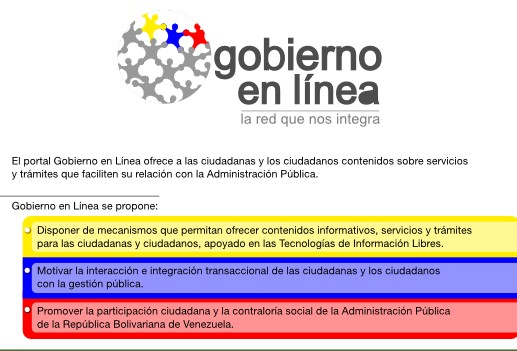
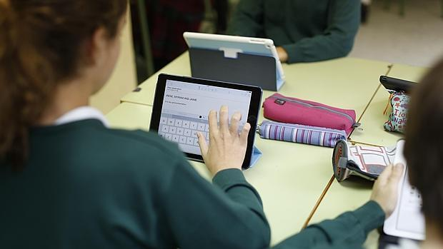

El uso de las TIC está en constante evolución y expansión. Desde la agricultura de precisión y la gestión del bosque a la monitorización global del medio ambiente planetario o de la biodiversidad, a la democracia participativa (TIC al servicio del desarrollo sostenible) pasando por la educación, el comercio, la telemedicina, la información, la gestión de múltiples bases de datos, las transacciones mediante medios electrónicos tales como el intercambio electrónico de datos, la robótica y los usos militares, sin olvidar la ayuda a las personas discapacitadas (por ejemplo, personas ciegas que usan sintetizadores vocales avanzados), las TIC tienden a ocupar un lugar creciente en la vida humana y el funcionamiento de las sociedades.
Comercio electrónico
Esta sección es un extracto de Comercio electrónico.
Explicación gráfica de como funciona.
El comercio electrónico 65—también conocido como e-commerce6667 (electronic commerce en inglés), comercio por Internet o comercio en línea— consiste en la compra y venta de productos o de servicios a través de internet, tales como redes sociales y otras páginas web. También puede ser definido como una actividad económica que permite el comercio de diferentes productos y servicios a partir de medios digitales, como páginas web, aplicaciones móviles y redes sociales. Por medio de la red virtual, los clientes pueden acceder a diversos catálogos de marcas, servicios y productos, en todo momento y en cualquier lugar.
 ............. ............ ..
............. ............ ..
Gobierno electrónico
Esta sección es un extracto de Gobierno electrónico.
Véase también: Administración electrónica
El gobierno electrónico o e-gobierno (en inglés: e-government), es el uso de dispositivos tecnológicos de comunicación, como computadoras e Internet para proporcionar servicios públicos a ciudadanos y otras personas en un país o región. El gobierno electrónico ofrece nuevas oportunidades para un acceso ciudadano más directo y conveniente al gobierno, y para la provisión de servicios gubernamentales directamente a los ciudadanos. El término consiste en las interacciones digitales entre un ciudadano y su gobierno (C2G), entre gobiernos y otras agencias gubernamentales (G2G)

E-sanidad
ESalud o e-Salud alude a la práctica de cuidados sanitarios apoyada en tecnologías de la información y las comunicaciones (TIC) para la atención de salud, la vigilancia y la documentación sanitaria así como la educación los conocimientos y las investigaciones en materia de salud. Se discute la simultaneidad del término con el de cuidados sanitarios informatizados o telemedicina. Sin embargo más que solaparse, estas modalidades se complementan correspondiendo a la eSalud una amplia variedad de servicios situados entre la medicina y los cuidados sanitarios tecnológicamente asistidos. La eSalud es un avance revolucionario para los profesionales de la salud, mediante la TICs mejor la calidez humana entre el paciente-doctor, buscando mejores procedimientos en el entorno pre-hospitalario y hospitalario.
Educación
Esta sección es un extracto de Educación expandida.
Educación expandida
El término educación expandida se refiere a una modalidad educativa que combina elementos propios de la educación formal, la enseñanza informal y el uso de las nuevas tecnologías de manera que apuesta por un aprendizaje permanente.76Internet permite que la información se pueda extraer y citar de múltiples fuentes, además, las herramientas colaborativas posibilitan que cada persona construya un itinerario formativo a medida, que responda a sus intereses y aptitudes. La premisa sobre la que se basa esta modalidad es que el aprendizaje, la educación, puede generarse en cualquier momento, en cualquier lugar, dentro y fuera de las paredes de las instituciones educativas.
- Información, bajada de los costes:
Deslocalización de la producción (centros de atención a clientes).
Mejor conocimiento del entorno, mejora de la eficacia de las tomas de decisiones.
- A nivel de la estructura de la empresa y de la gestión del personal:
Organización menos jerarquizada, repartición sistemática y práctica de la información.
Mejor gestión de los recursos humanos.
Formas de teletrabajo.
Automatización de trabajo.
- A nivel comercial:
Extensión del mercado potencial (comercio electrónico).
Una bajada de los costes logístico
Desarrollo de las innovaciones en servicios y respuestas a las necesidades de los consumidores.
Mejora de la imagen de marca de la empresa (empresa innovadora)
..........